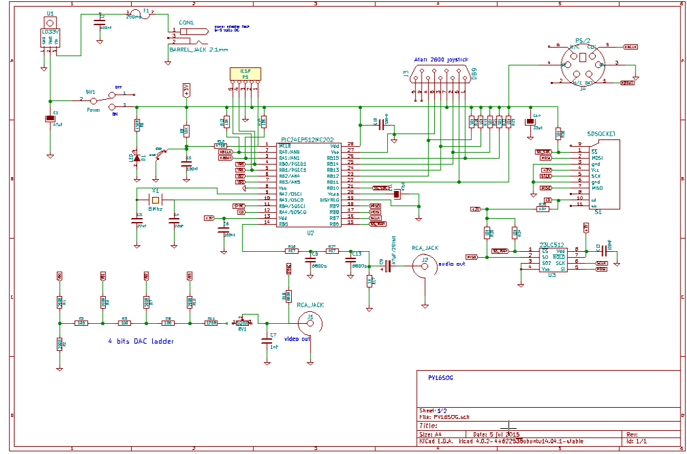

Ordindateur PV16SOG
Licence
Ce document fait partie du projet PV16SOG et est fourni sous licence CC-NC-SA-BY V3.0
auteur: Jacques Deschênes
révision 1.0
Copyright: 2015,2016, Jacques Deschênes
Présentation
L'objectif de ce projet était de créer un petit ordinateur qui aurait des capacités semblables à celle d'un ordinateur des années 70 comme le TRS-80 en utilisant
la technologie disponible en 2015. Je voulais garder le montage électronique le plus simple possible afin qu'il puisse être réaliser à faible coût par un amateur avec
un minimum d'expérience en électronique.
Il s'agit d'un petit ordinateur basé sur un microcontroleur PIC. PV16SOG signifit: PICVision 16 Shade Of Gray.
caractérisiques de PV16SOG
- MCU PIC24EP512MC202
- Affichage vidéo de 240x170 pixels en 16 tons de gris.
- Sortie son: tonalitée simple ou bruit blanc.
- interface pour carte SD.
- interface pour clavier PS/2
- interface pour joystick Atari 2600
- mémoire RAM externe de 64Ko à interface SPI. Microchip 23LC512
- logiciels en firwmare:
- shell de commande
- machine virtuelle pv16vm.html qui exécute un programme stocké dans la RAM SPI. voir pv16asm.html
- éditeur de texte servant écrire les programmes pour PV16ASM. Fichiers stockés sur la carte SD.
- assembleur PV16ASM pour convertir les fichiers créer dans l'éditeur de texte en fichiers binaires exécutable par PV16VM aussi conservés sur la carte SD. Ces fichiers binaires sont chargés dans la SPI-RAM pour exécution.
schéma électronique

principaux composants
- MCU PIC24EP512MC202, ce processeur contient 512Ko de mémoire flash et 48Ko de RAM.
- Mémoire SPI RAM 23LC512, mémoire sérielle à interface SPi de 64Ko.
- Régulateur de tension LD33V.
- Une embase pour la carte SD.
- Un connecteur MINI-DIN-6 pour le clavier PS/2.
- Deux Connecteurs RCA audio pour les sorties son et NTSc
- Un connecteur barrel jack 2,1mm pour l'adapteur d'alimentation.
- Un cristal de 8Mhz.
- Un bouton momentané pour le RESET.
- 1 porte piles pour 2 piles AA.
- 1 LED indicateur d'alimentation
Le reste sont des résistances et condensateurs. Les résistances R1-R5, R7,R8,R10,R11 pour le convertissseur numérique/analogique doivent avoir une présicion d'au moins 1%.
prototype